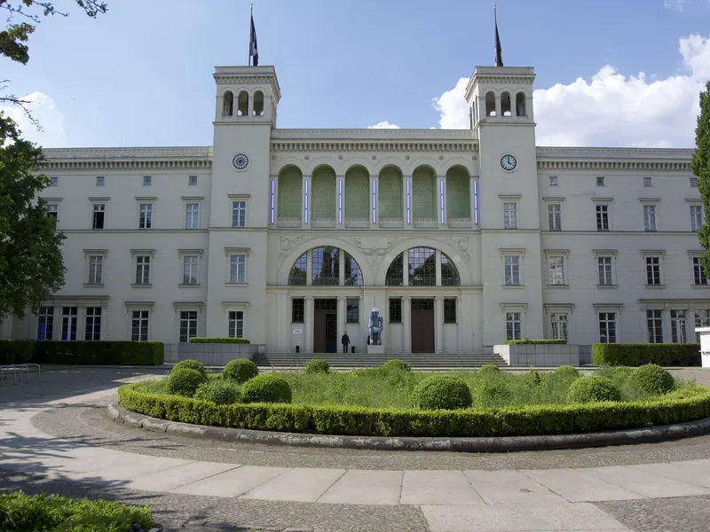
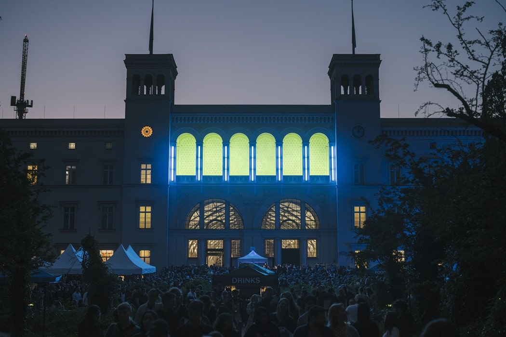
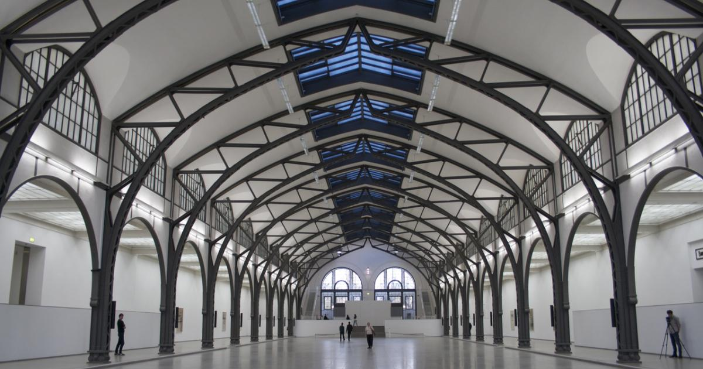

Hamburger Bahnhof
Nationalgalerie
der Gegenwart
Waarom je hierheen wilt
Hier kijk je niet alleen naar kunst. Je wordt er onderdeel van.
Loop door licht, geluid en metershoge installaties in een oud treinstation. Een museumbezoek dat meer voelt als een ervaring.



Oud spoor, nieuwe blik
Waar kunst ruimte krijgt.
Hamburger Bahnhof is een museum voor hedendaagse kunst in het voormalige treinstation dat Berlijn ooit met Hamburg verbond. Het complex bestaat uit het historische stationsgebouw, de langgerekte Rieckhallen en een groene tuin.
De collectie volgt kunst van rond 1989 tot nu. Naast vaste werken zijn er ieder jaar nieuwe tentoonstellingen. In november 2026 zie je onder andere Studio Rieckhallen, met werk van Olafur Eliasson en Tomás Saraceno.
Waarom voor CSD?
Kijk niet alleen. Ervaar.
Veel installaties, videokunst en ruimtelijk werk draaien om licht, techniek en de aanwezigheid van de bezoeker. Precies de plek om te onderzoeken hoe een omgeving reageert, een verhaal vertelt en publiek meeneemt in een ervaring.
- 01 Interactie
- 02 Ruimtelijk ontwerp
- 03 Techniek & licht
Plan je bezoek
Goed om te weten
02—05 november 2026
Openingstijden
- Ma 02.11
- Gesloten
- Di 03.11
- 10:00–18:00
- Wo 04.11
- 10:00–18:00
- Do 05.11
- 10:00–20:00 late night
Deels open tijdens de studiereis: maandag gesloten.
Entree & Prijzen
Inclusief toegang tot de permanente collectie en alle tijdelijke tentoonstellingen. Online te boeken tot 4 weken vooruit.
- Familiezondag
- €10 / €15
- Museumpas Berlijn (3 dagen)
- €32 korting €16
Alleen op zondagen: €10 voor 2 personen of €15 voor 3 of meer personen.
3 dagen onbeperkt toegang tot meer dan 30 musea in Berlijn, inclusief Hamburger Bahnhof.
Route & adres
Midden in Berlijn.
Invalidenstraße 5010557 Berlin
Neem vanaf Hostel Generator Berlin Mitte de uitgang en loop vervolgens richting de Friedrichstraße. Loop via de Invalidenstraße in westelijke richting; het museum ligt aan je rechterhand.
- Loop richting Aaron-Bernstein-Platz 300 m
- Sla rechtsaf naar Friedrichstraße 86 m
- Sla linksaf naar Hannoversche Str. 500 m
- Weg vervolgen naar Hessische Str. 160 m
- Sla linksaf naar Invalidenstraße 550 m
Op de kaart
Twee pins.
Eén citytrip.
Bronnen & credits
Verder kijken
Fotografie
- Fluffigkatt, “Hamburger Bahnhof, Berlin”, Wikimedia Commons, CC BY-SA 4.0 (bijgesneden, zwart-wit)
- Lear 21, “HB Europacity 01”, Wikimedia Commons, CC BY-SA 4.0 (bijgesneden, zwart-wit)